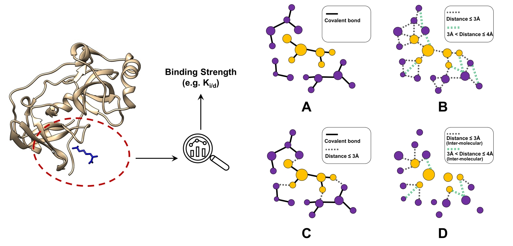
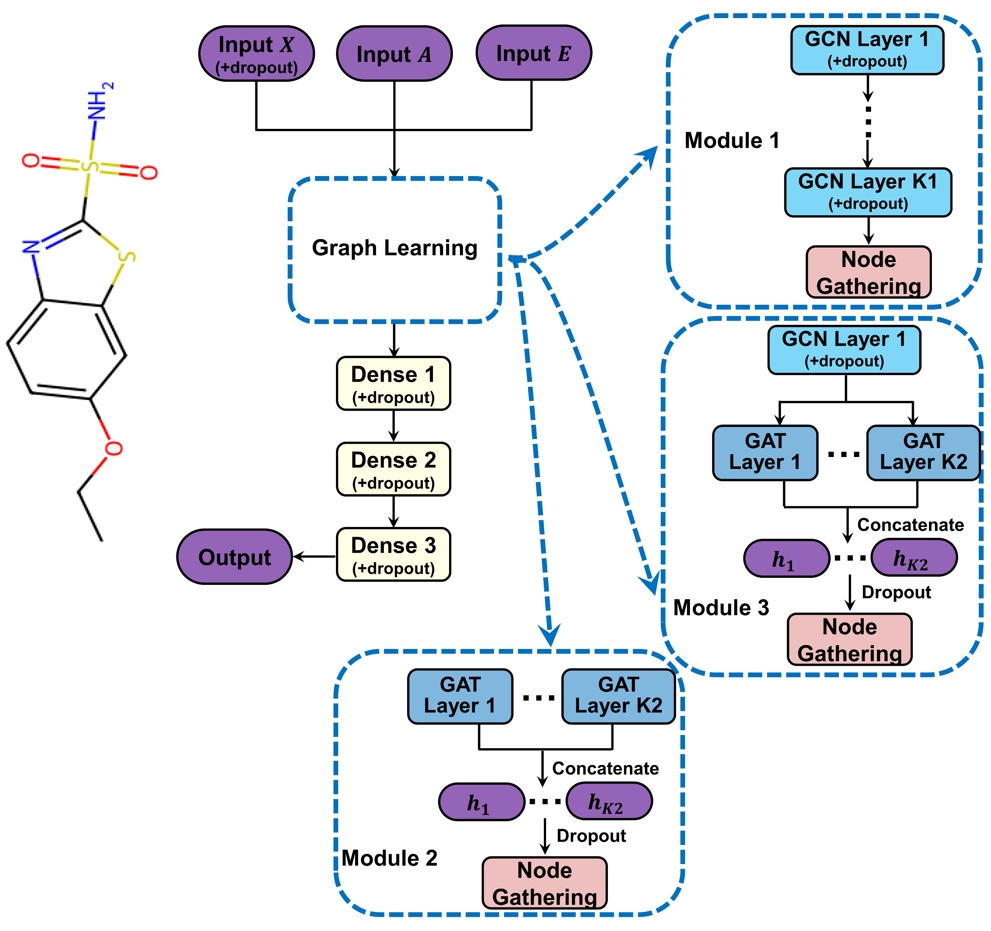
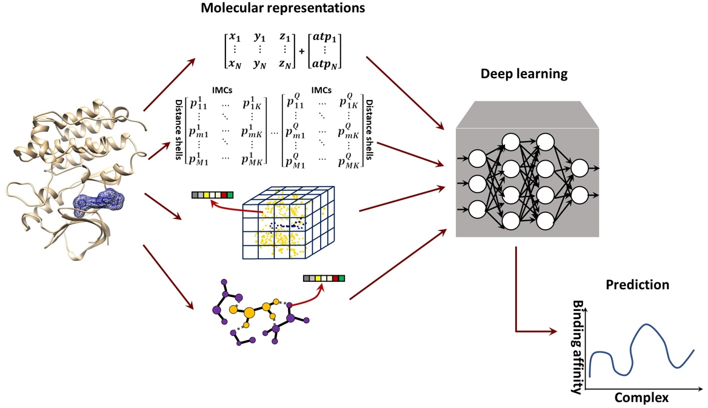
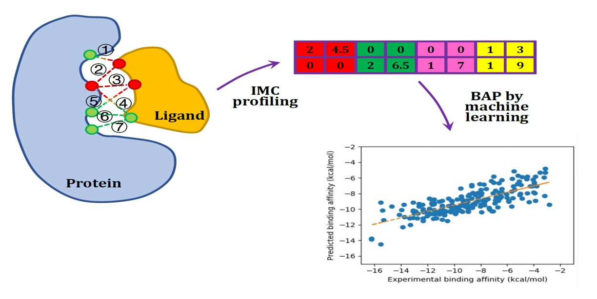
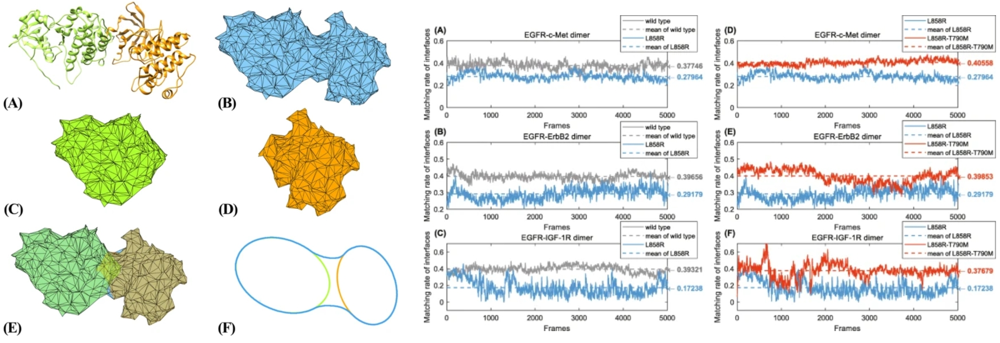
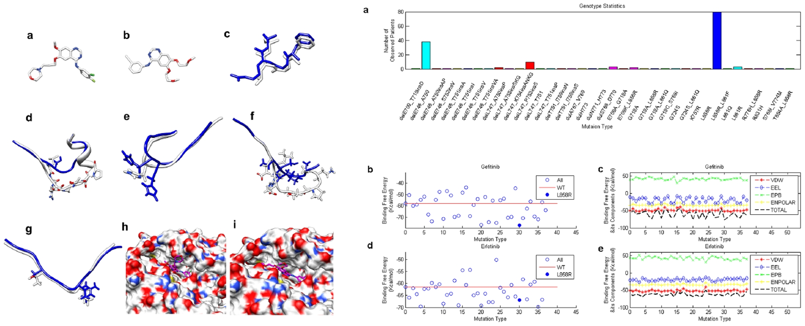
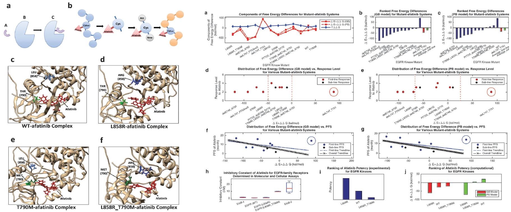
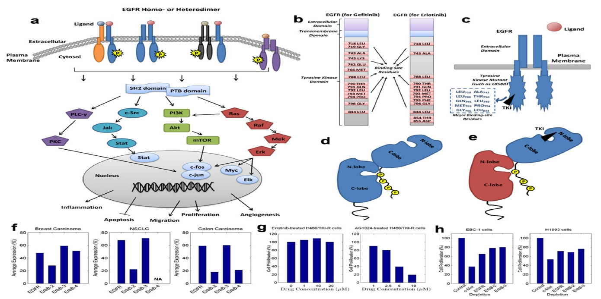
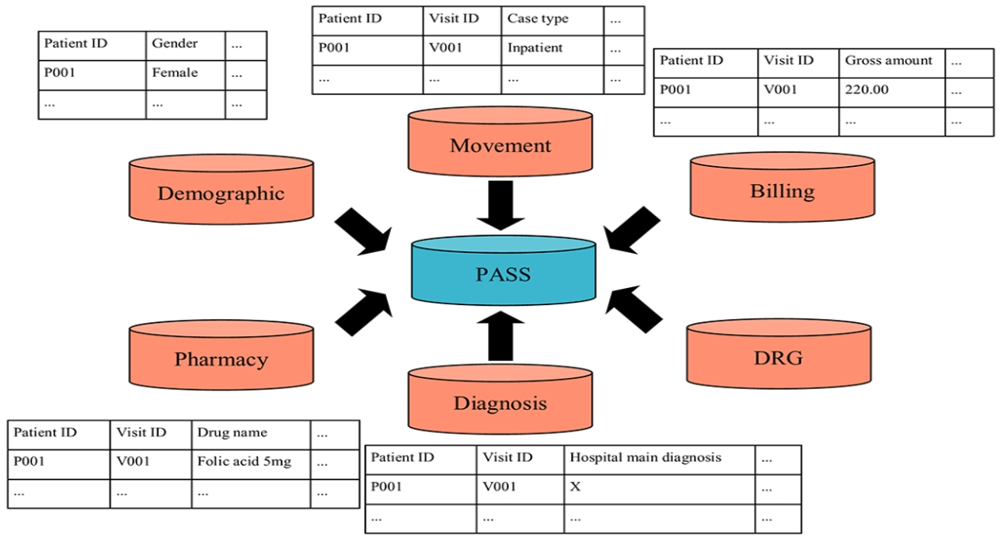
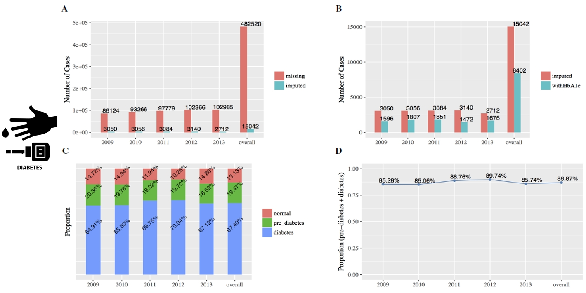

Binding Affinity Prediction

Publication: Wang, Debby D., and Yuting Huang.
"Scoring protein-ligand binding structures through learning atomic graphs with inter-molecular adjacency."
PLOS Computational Biology 21, no. 5 (2025): e1013074.
GitHub: DL-PLBAP
Dataset: Zenodo
Molecular Toxicity Prediction

Publication: HUANG, YUTING, DUNLU PENG, and DEBBY D. WANG.
"Learning of Molecular Graphs in Toxicity Prediction."
In 2024 International Conference on Machine Learning and Cybernetics (ICMLC), pp. 232-238.
Dataset:
MoleculeNet Tox21
Binding Affinity Prediction

Publication: Wang, Debby D., Wenhui Wu, and Ran Wang.
"Structure-based, deep-learning models for protein-ligand binding affinity prediction."
Journal of Cheminformatics 16, no. 1 (2024): 2.
GitHub: DL-PLBAP
Dataset: PDBbind
Molecular Representation Modeling

Publication: Wang, Debby D., and Moon-Tong Chan.
"Protein-ligand binding affinity prediction based on profiles of intermolecular contacts."
Computational and Structural Biotechnology Journal 20 (2022): 1088–1096.
GitHub: BAP
Dataset: PDBbind
Molecular Dynamics Simulation and Analysis

Publication: Zhu, Mengxu, Debby D. Wang, and Hong Yan.
"Genotype-determined EGFR-RTK heterodimerization and its effects on drug resistance in lung cancer treatment revealed by molecular dynamics simulations."
BMC Molecular and Cell Biology 22, no. 1 (2021): 34.
Dataset: Private hospital data (Queen Mary Hospital in HK)
Mutation-induced Drug Resistance Analysis

Publication: Wang, Debby D., Weiqiang Zhou, Hong Yan, Maria Wong, and Victor Lee.
"Personalized prediction of EGFR mutation-induced drug resistance in lung cancer."
Scientific Reports 3, no. 1 (2013): 2855.
Dataset: Private hospital data (Queen Mary Hospital in HK)
Drug Response Analysis and Mechanism Exploration

Publication: Wang, Debby D., Victor HF Lee, Guanyu Zhu, Bin Zou, Lichun Ma, and Hong Yan.
"Selectivity profile of afatinib for EGFR-mutated non-small-cell lung cancer."
Molecular BioSystems 12, no. 5 (2016): 1552-1563.
Dataset: Private hospital data (Queen Mary Hospital in HK)
EGFR Signaling Pathway Analysis

Publication: Wang, Debby D., Lichun Ma, Maria P. Wong, Victor HF Lee, and Hong Yan.
"Contribution of EGFR and ErbB-3 heterodimerization to the EGFR mutation–induced gefitinib- and erlotinib-resistance in non-small-cell lung carcinoma treatments."
PLOS ONE 10, no. 5 (2015): e0128360.
Dataset: Private hospital data (Queen Mary Hospital in HK)
Health Services Research

Publication: Rahman, Nabilah, Debby D. Wang, Sheryl Hui-Xian Ng, Sravan Ramachandran, Srinath Sridharan, Astrid Khoo, Chuen Seng Tan, Wei-Ping Goh, and Xin Quan Tan.
"Processing of electronic medical records for health services research in an academic medical center: methods and validation."
JMIR Medical Informatics 6, no. 4 (2018): e10933.
Dataset: Private EMR system (NUHS)
Data Imputation in EMRs

Publication: Wang, Debby D., Sheryl Hui-Xian Ng, Siti Nabilah Binte Abdul, Sravan Ramachandran, Srinath Sridharan, and Xin Quan Tan.
"Imputation of Missing Diagnosis of Diabetes in an Administrative EMR System."
In 2018 11th Biomedical Engineering International Conference (BMEiCON), pp. 1-5. IEEE, 2018.
Dataset: Private EMR system (NUHS)